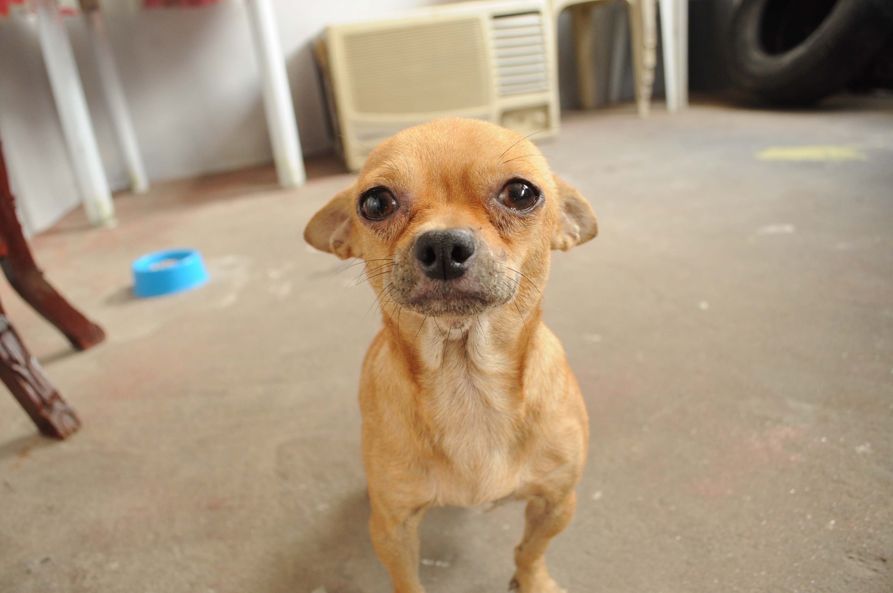
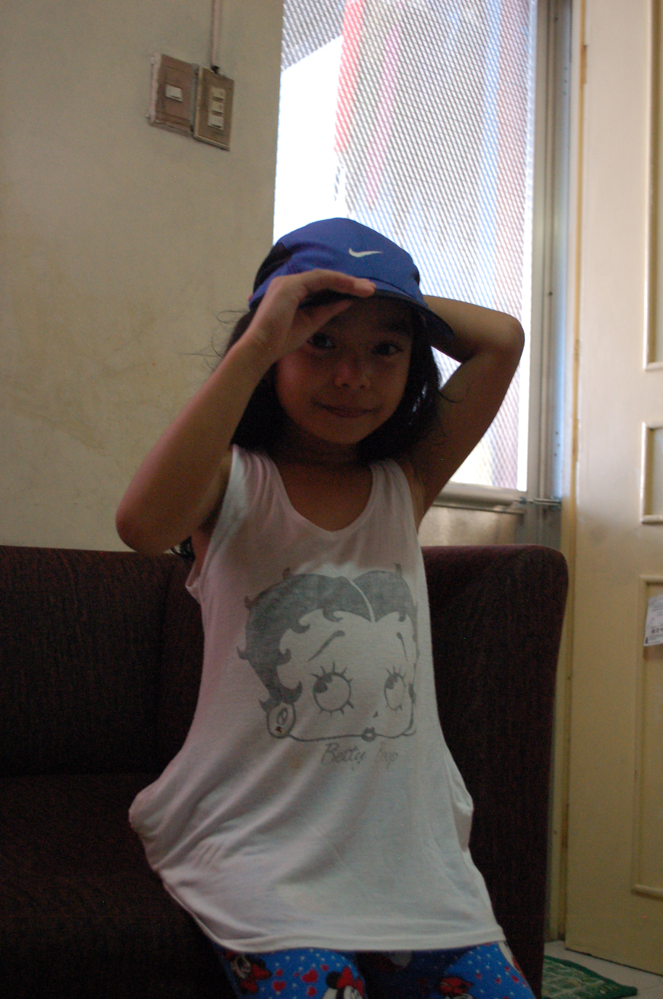

SARJ PHOTOGRAPHY
Porfolio of my captured memories

Arf! Arf! Arf!
Marco, October 10, 2015
Marco, my dog, turning 4 years old. This picture was the first photo I took. Because of this picture that I loved the most, I started exploring the world of photography.
Nature and Music is Harmony
Aira Concepcion, May 14, 2016
Aira, a 16 year old, is one of my closest friends. She started learning the violin when she reached the age 15 and this was photographed by summer.
About Me
Sarah Borja
Sarah, a teenager who is enjoying life at its finest and capturing the moment while living it.
Popular Posts
-
 Young and Free
Young and Free
Enjoying Youth -

When I grow up!
A child's perspective. -
Fashionable!
Fashion brings color to life.
Tags
Photo Memories Philippines Music Style Fashion Nature Baby Family Animals Capture Camera Love Dogs